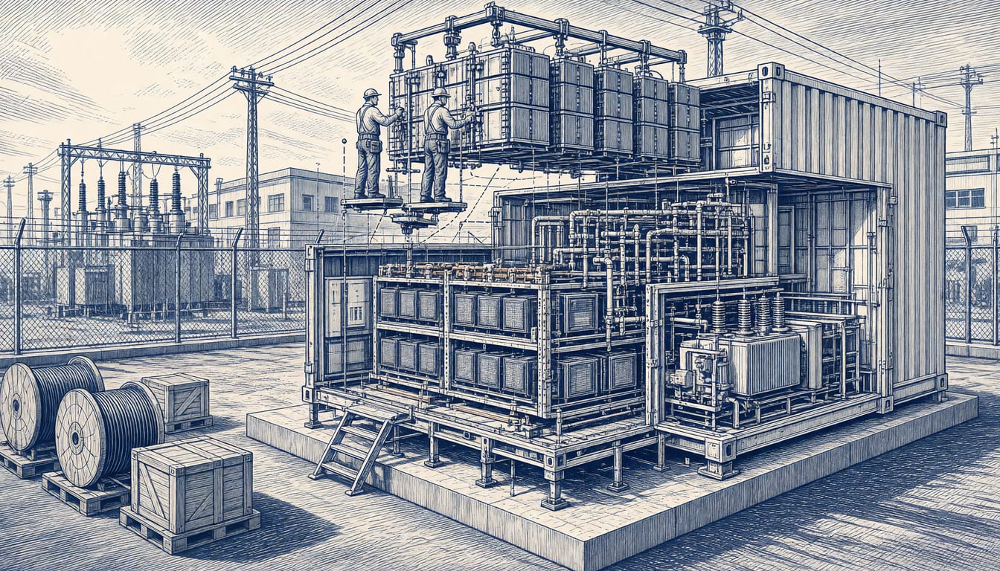

Opinion
Italy can count its batteries. It cannot pay for the next million.
The market builds storage faster than any plan, but a rulebook that pays by rations starves the 122 GWh target. ARERA and the ministry must date the remuneration reform before the next auctions.

One million batteries is a headline. The rule that pays for the next million is the story, and Italy has not written it. Terna's count crossed a million renewable-linked storage units in October, a genuine fleet and a real market. Yet the national plan wants 122 GWh by 2030 against roughly 19 today. The gap is a rulebook that procures storage in administered rations instead of paying for what the market would build on its own.
The market runs at two speeds. Utility-scale storage grew 197 per cent quarter on quarter in the first half of 2026, and Terna assigned 10 GWh in MACSE's first auction. Another 10 GWh sits under construction on 6 GWh operating. The Ministry issued five authorisations on 30 October alone, 722.5 MW in one morning. The ministry has issued authorisation decrees for 11.2 GW in all. Then there is the other Italy: 1.3 GWh installed in the whole first half of the year. The target needs six times today's stock. ANIE Rinnovabili counted a fall of 58 per cent in new storage capacity installed over the twelve months to June. The residential segment recorded its eleventh consecutive quarter of contraction.
The market is not short of builders. Supply exceeded MACSE demand seven times over. Solar Media analyst Josh Cornes counts planned grid-scale capacity grown tenfold in three years, risking saturation. And 300 GW of connection requests queue at a gate with 20 GW already authorised, enough to meet targets through 2040. A rulebook that rations a queue it never meant to clear is not a market working. It is an administered one, and the operators closest to the machinery say the problem is the ability to remunerate storage, not the technology.
The one rule that should hold everywhere: storage is paid by the market it serves, through published price signals and transparent grid services. That means ARERA and the ministry set a dated reform of storage remuneration before the auctions that must deliver the 2030 targets, making merchant investment the main route. It means putting into force the Bollette-decree connection reform, which, according to an interview in ESS News, could cut the request queue by as much as 70 per cent. Enel owns 80 per cent of operational grid-scale capacity; a market that pays by price, not by ration, is also how other owners get in. More than 30 GWh still must be procured by 2030. We want those 30 GWh paid for by published price signals, not by administered rations.